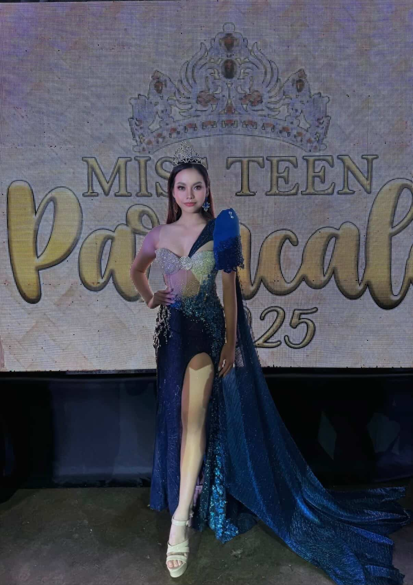
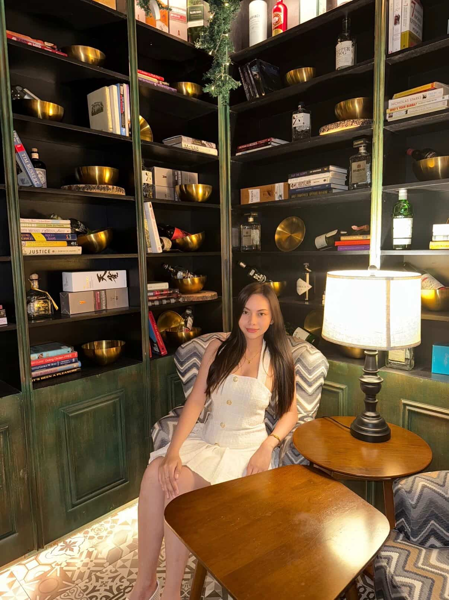
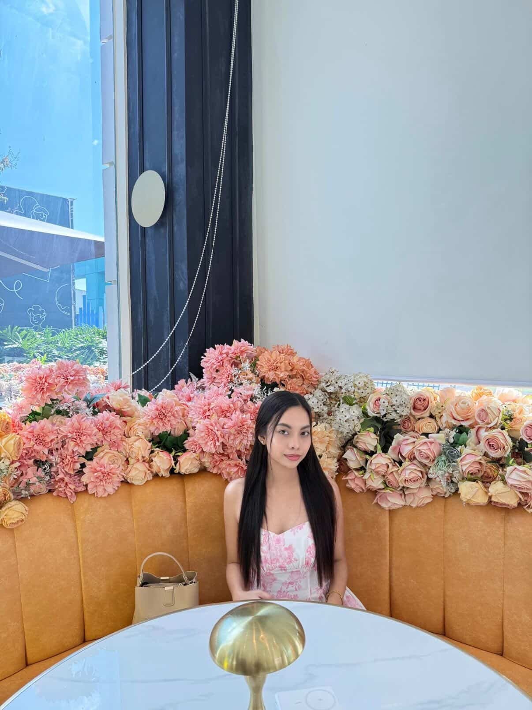
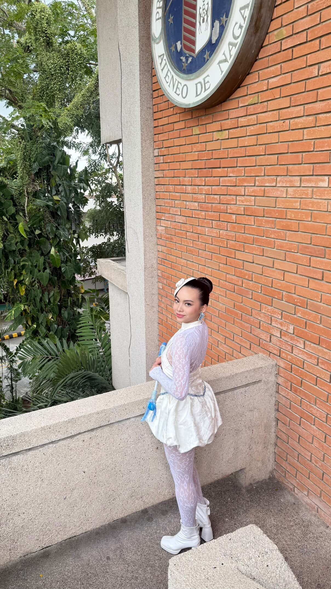

loading something cute...
Choose your vibe ✨
Assessment in Learning EDUM205 N2AM.
Hi there! I am Nikol I. Velante, 19 years old, from Camarines Norte, and currently a second-year Bachelor of Secondary Education major in Science student at Ateneo de Naga University.
Beyond my academic life, I am someone who enjoys exploring new experiences and capturing meaningful moments. I have always been open to challenges, whether it is stepping out of my comfort zone by joining beauty pageants or strengthening my discipline and creativity through physical activities like running and boxing.
These experiences have helped shape my confidence, resilience, and determination. As I continue my journey, I strive to grow not only as a student but also as an individual who is passionate about learning and self-improvement, believing that every experience contributes to who I am becoming while I pursue my goals with purpose and perseverance..
This website is intended to showcase who I am and what I do as a learner and future educator. Presented here are various artifacts from EDUM205: Assessment in Learning, which I have carefully developed throughout the semester.
Each artifact reflects not only my understanding of assessment principles but also my growth in designing meaningful and effective ways to evaluate student learning. These outputs serve as a strong foundation in developing my skills in assessment, which I recognize as an essential component of teaching.
As I continue my journey toward becoming an Ignatian teacher, I aim to use these learnings to create thoughtful, learner-centered assessments that promote deeper understanding and holistic development.
Some say that in a child’s entire learning journey, from elementary to higher education, there is at least one teacher they will never forget, and for me, that teacher is Sir Popoy. Sir Arnulfo R. Reganit, more commonly known as Sir Popoy, is my professor in EDUM205 Assessment in Learning.
He is someone whom students naturally look up to, not only because of his presence and aura whenever he enters the classroom, but also because of the depth and clarity he brings to every lesson. His wisdom, grit, and passion for teaching have made me realize how impactful and inspiring a teacher can truly be, as he consistently goes beyond what is expected.
He has a unique ability to connect lessons to real life experiences, making it easier for learners to understand and appreciate the concepts being taught. Through his guidance, I have gained not only knowledge about assessment but also a deeper appreciation for the role of a teacher in shaping students’ lives, reminding me of the kind of educator I aspire to become, one who teaches with purpose, inspires with passion, and leaves a lasting impact on every learner.




Email: nvelante@gbox.adnu.edu.ph